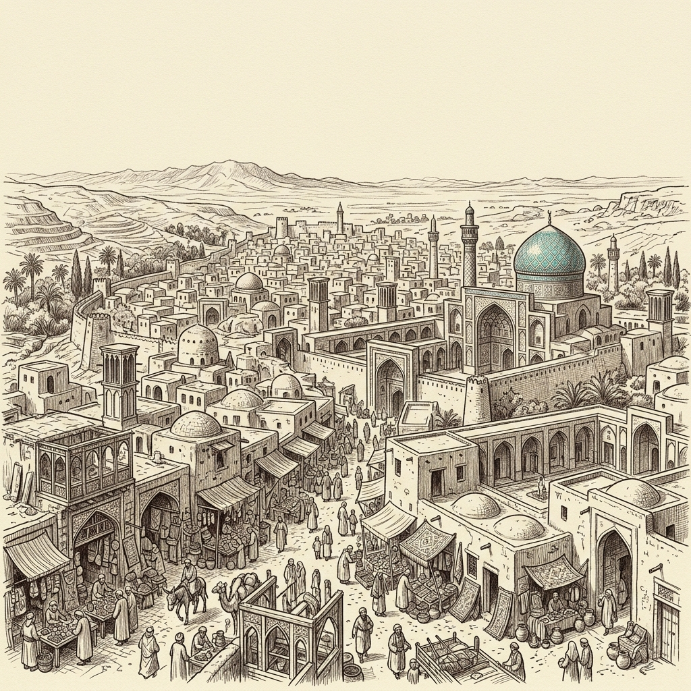
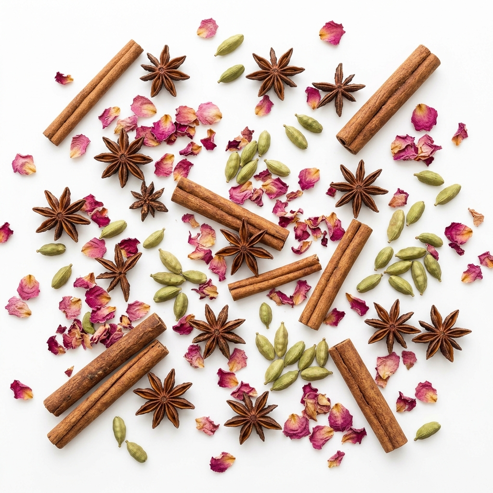
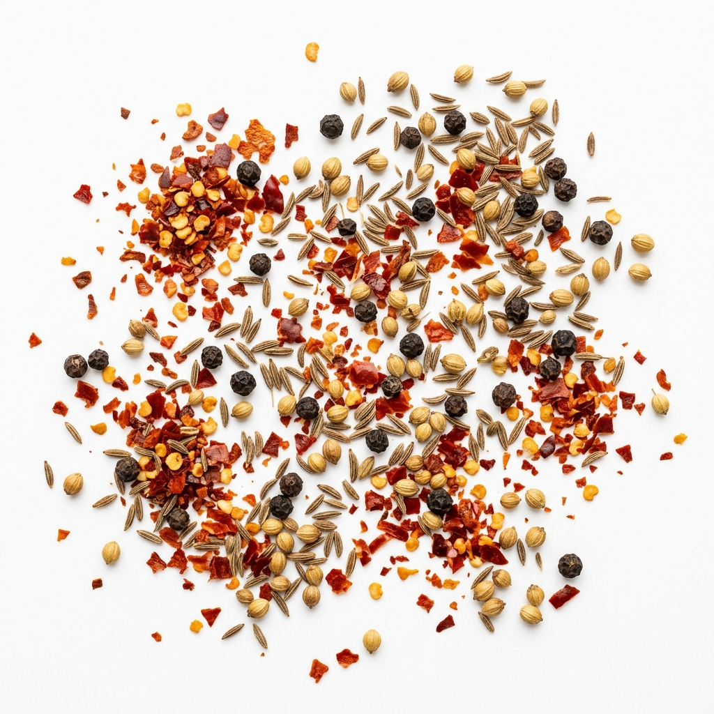
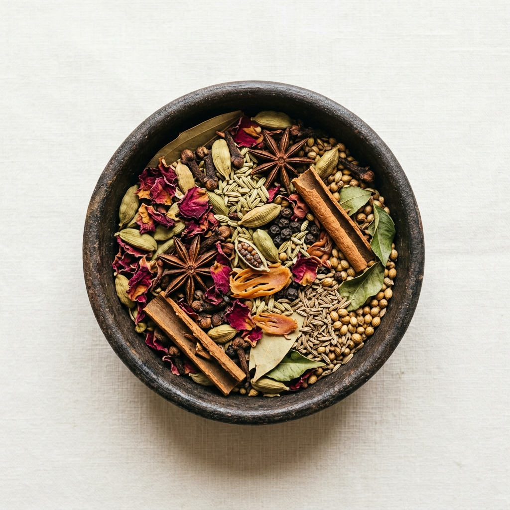
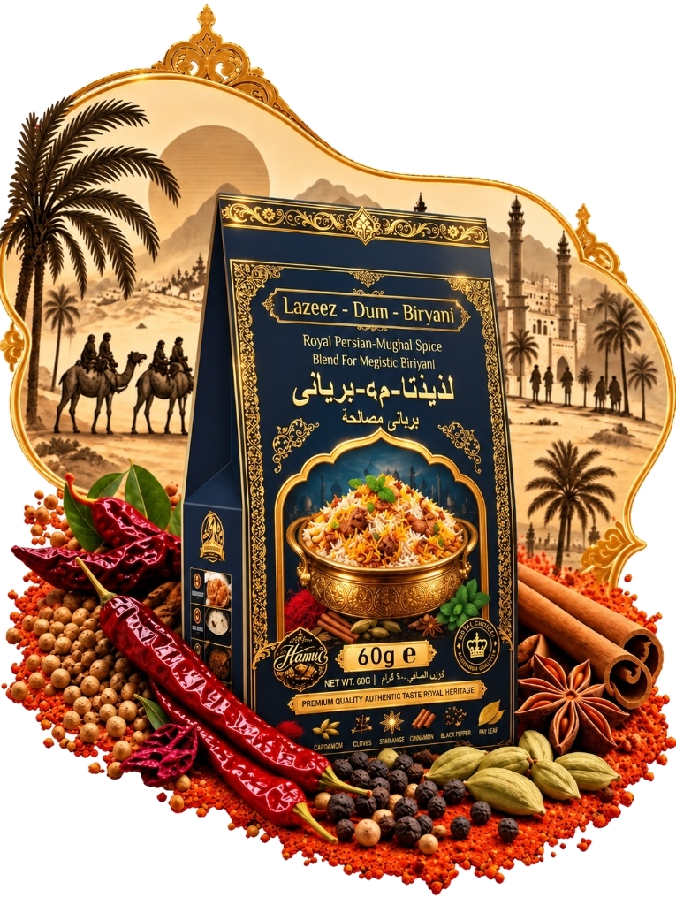
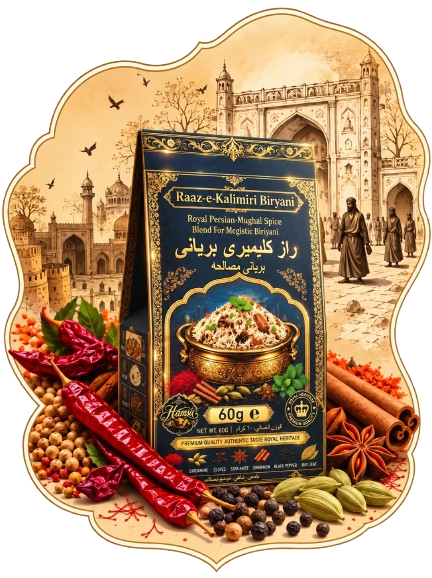
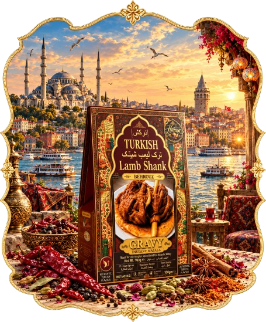
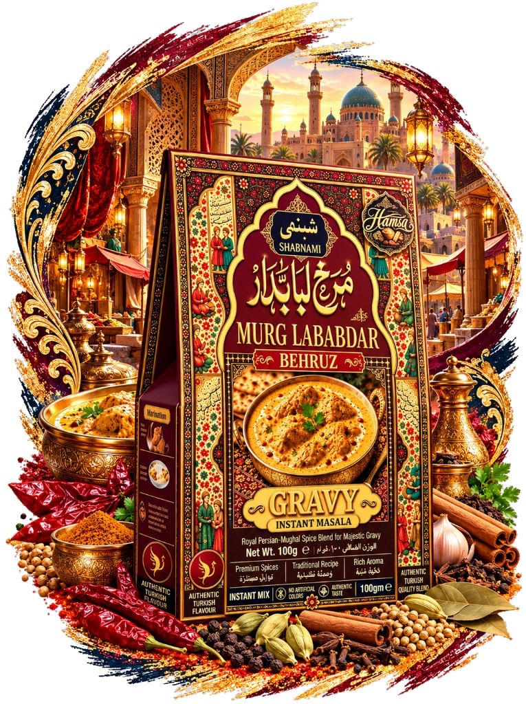
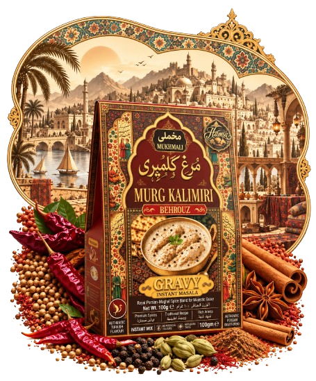

From the Grand Kitchens of Isfahan & Tehran to Your Dinner Table. Experience a century of handmade aromas, handpicked Silk Route spices, and palatial recipes passed down through generations.
In the golden era of the ancient Silk Route, traders and spice masters braved shifting dunes from Shiraz to the grand bazaars of Isfahan. Caravans laden with precious Persian saffron, sun-ripened cardamom, sweet mace, and rare mountain cumin traversed mountain passes under starlit Persian skies.
Inside the imperial courts, royal chefs—known as the Shahi Bawarchis—discovered that spices should never be simply crushed. They needed to be gently roasted over low coals to waken their dormant essential oils, then handmade in micro-batches to preserve their soul.
In 1928, our founder codified these guarded formulations in a handwritten leather journal. Today, Hamsa Masala keeps this centuries-old tradition completely alive—bringing authentic royal banquet flavors straight to your everyday kitchen.

The legendary Silk Route marketplace where our heirloom recipes were born.
Every batch of Hamsa Masala follows an uncompromising 4-step ritual that machine-made commercial powders can never replicate.
We travel to the high plateaus of Khorasan to hand-select *Super Negin* saffron threads, highland green cardamom from mist-covered ridges, and wild sumac. No mass commodity grains; only top 1% harvest.


Whole pods, star anise, and cinnamon barks are slowly sun-dried under warm desert skies to naturally condense volatile aromatic oils. Each pod is cracked and inspected by third-generation blenders.
In heavy iron cauldrons, spices are slow-roasted at precisely 65°C to release rich essential fragrances without charring subtle top-notes. Handmade in micro-batches to preserve coarse royal texture.

Immediately sealed in amber and glass jars with an airtight royal crown seal. Zero added starch, zero artificial food coloring, zero chemical stabilizers. Just pure imperial aroma that fills your home.
Each creation honors a distinct era and banquet tradition from ancient Persia. Crafted to elevate your everyday culinary creations into imperial feasts.

Inspired by the grand royal kitchens of the Behruz dynasty. Roasted in small batches with Grade-1 Persian saffron threads, fragrant star anise, sweet mace, and green highland cardamom. Infuses every single grain of basmati rice with an irresistible royal bouquet.

Under slow-steam "dum" sealed with dough, stone flower, green cardamom, star anise, and whole cloves wrap every morsel in deep aroma and aristocratic elegance.

A revered palace secret balancing bold Tellicherry black peppercorns, roasted Kashmiri red chilies, and Ceylon cinnamon quills. Infuses dum biryani with warm, smoky depth and aristocratically balanced heat.

Topkapi palace tradition formulated with sun-dried sumac, smoked sweet paprika, roasted garlic, and Anatolian herbs. Yields fall-off-the-bone tender meat in a velvety demi-glaze.

Heirloom shallot extracts, handmade garam masala, and fragrant Kashmiri chili create a glossy, dark gravy for caramelized morsels, traditionally crowned with golden salli matchstick potatoes.

Silky tomato-cashew satin gravy with char magaz seeds, green cardamom, and sun-dried Kasuri methi. An imperial delicacy of pure royal surrender.

A soothing white gravy crafted with cracked Malabar peppercorns, blanched almonds, poppy seeds, and fragrant whole spices for the subtle aristocratic palate.

Simmered in rich milk, infused with Persian Super Negin saffron filaments, pure Damascus rosewater, green cardamom seeds, and slivered Iranian pistachios. The quintessential royal dessert since 1923.
"Where fragrant spices whisper stories of old Isfahan, bringing centuries of royal feasts directly to your dinner table."
Login or Sign up to complete your royal feast order